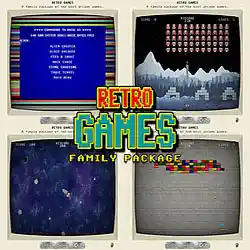

Android App

Everything is simple FREE
Game
If you want, I'll give you my life story. Try to experience it through the game. There is nothing wrong with that. We will only understand each other better. I am a forty-one-year-old computer scientist and I want to show you how all the different paths end together in the same place.
Android App
Everything is simple FREE
Android Game
probe
Windows Game
Retro Games FREE